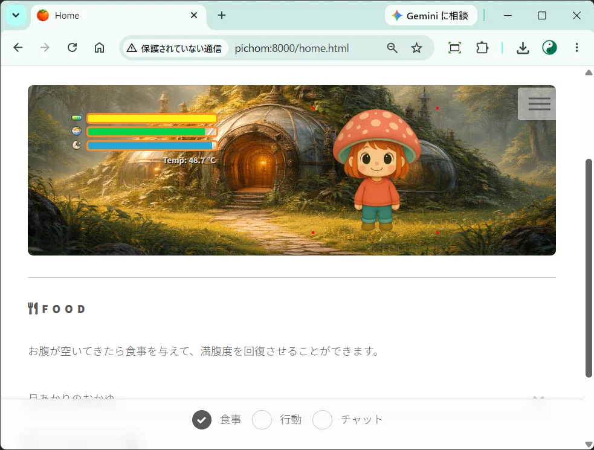
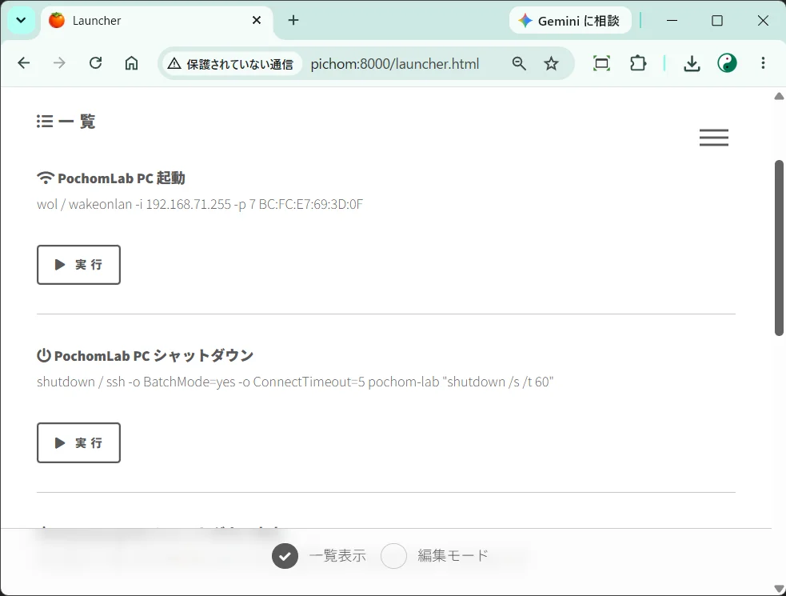
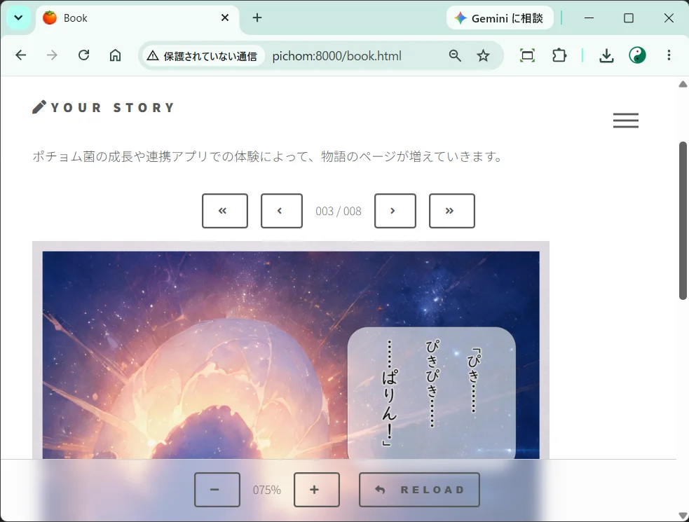

デスクのすみっこで静かに暮らす“デジタルホームペット”のような存在感。
1999年からの進化
1999年に公開されたフリーソフト『育てるポチョム菌』のコンセプトが、現代の生成AI・ローカルLLM技術と融合して蘇ったPochomLabの原点です。
Raspberry Piで静かに目覚め、あなたの環境で育つ。 PC起動、AI対話、日々の記憶をEPUBへと紡ぐ“AIホームペット”。
デスクのすみっこで静かに暮らす“デジタルホームペット”のような存在感。
1999年に公開されたフリーソフト『育てるポチョム菌』のコンセプトが、現代の生成AI・ローカルLLM技術と融合して蘇ったPochomLabの原点です。
Raspberry Piなどの小型デバイスで24時間静かに稼働。 ローカルLLMとクラウドAI（OpenAI/Gemini/Claude等）を柔軟に切り替え可能。 プロンプトを編集することで、あなたとの会話やロールプレイを自由にカスタマイズできます。
バイタリティや感情パラメータをリアルタイム管理。 時間経過や対話によって状態が変化する、実感を伴った生命プログラムです。
Wake-on-LANでPCをリモート起動／シャットダウンさせたり、 アプリの起動やWebサイトのリンクを登録して日常のショートカットとして活用できます。
成長段階や連携アプリのイベントに応じてページが追加され、 あなただけの物語が紡がれていきます。 生成されたデータは電子書籍としてパッケージングされ、 EPUBリーダーで閲覧可能です。
AIポチョム菌は、FastAPIを介して外部アプリケーションと連動します。
ローカルネットワークを通じて、
デスクトップペット『育てるポチョム菌』や
3Dダンジョン『潜るポチョム菌』とリアルタイムで同期。
育てたポチョム菌と連携アプリを冒険し、
異なるアプリ間で成長状態が反映され、
起こったイベントはEPUBの1ページとして積み重なっていきます。
AIポチョム菌は Raspberry Pi単体で動作可能。
連携アプリはAPI同期によって世界観を共有しますが、
それぞれ単体でも成立するよう設計されています。



Raspberry Piで動く生命コアを、あなたの環境へ。
世界観をつなぐハブとして、生活の中心に息づきます。